D-Edge software guide
A publication by Donatoni Macchine S.r.l.
Software Version: 2026.1.0.0
Manual Version: 1.0
Date: 13/04/2026
Generalities
The informations contained in this document are applicable only to the software versions listed on the cover page.
It is possible that not all functions explainable by the product are described in the present documentation; in these cases DONATONI MACCHINE SRL is not, however, obliged to guarantee these functions nor to preserve them in future versions.
The present document is provided as attachment 'Section B', software part, of the machine usage and maintenance manual.
Purpose of the manual
This manual provides the necessary usage instructions for proper understanding of the D-Edge program and useful information to find solutions to malfunctions.
Compliance with what is described in this manual determines the proper operation, duration, and operating economy of the machine itself.
The user and maintenance manual of the machine and the present software manual must always be available at the installation site of the plant, in a safe and easily accessible location. If one of them is lost, contact the prevention and protection service manager.
Failure to comply with what is described in this manual, negligence, improper and inadequate use of the machine may result in cancellation, by the Manufacturing Company, of the warranty it provides for the machine itself, and furthermore, the benefits for which this machine was built may not be obtained.
DONATONI MACCHINE SRL remains available to provide prompt and accurate technical assistance and all that may be useful for optimal machine operation and to achieve maximum performance from the machine.
The Manufacturer reserves the right to modify, at its own discretion, this publication and the data contained therein whenever deemed necessary for technical or commercial improvement of the product.
Manual storage
The present Software Manual must be kept throughout the machine's operational life, even in case of transfer to third parties.
To properly save the Software Manual it is recommended:
Use the Manual in such a way as not to damage all or part of the Content; in particular it is recommended not to leave the Manual unattended during use and to store it in the assigned place immediately after the end of consultation;
Do not remove, tear or rewrite any parts of the Manual for any reason;
Store the Manual in areas protected from moisture, heat and other environmental agents that could compromise its integrity or durability;
In case of loss or damage to all or part of the Content of this Manual, request a copy of such documentation from the Manufacturer.
The system has been designed to facilitate the operator in the working of pieces. Through the software it is possible:
Create recipes for piece workings
Check and modify the configuration of the Group and Elements that make up the machine
Monitor execution of workings on screen
Display statistics related to the machine and the work performed by it
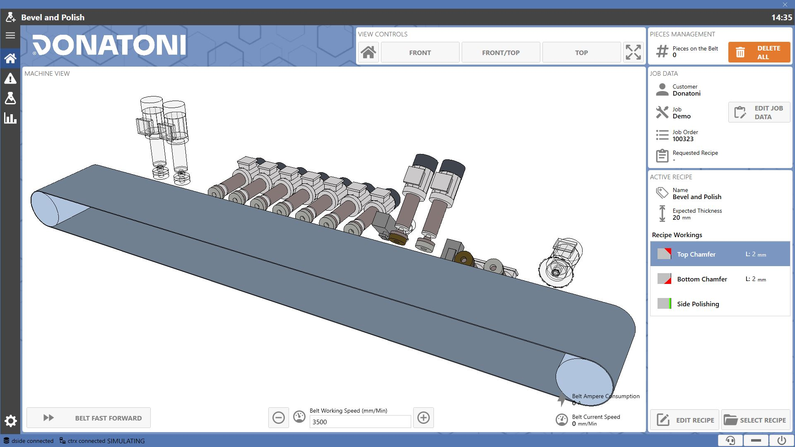
Operational status of the Machine
Operational status of the machine indicates whether it is in Working, waiting for instructions, on alert or in Error.
Each state is associated with a color, visible in the background of the application pages.
 | Waiting |
 | Working |
 | Error |
 | Alert |
Side menu
The sidebar allows navigation between the different program pages.
 | Menu |
Home | |
Alarms | |
 | Recipes |
 | Statistics |
Settings |
Top bar
The active warning and error messages are displayed in the application's top bar. Additionally, the name of the recipe currently loaded on the machine is shown.
The operator can access the alarms page by pressing the messages.
Active Recipe | |
 | Error |
 | Notice |
Bottom bar
Utility buttons are located to the right of the lower section of each screen.

Remote Assistance | |
 | Minimize to icon |
 | Stop system |
Remote Assistance
Clicking the Remote Assistance button in the bottom bar allows opening a panel with ID and Password to be communicated to Donatoni technical assistance when needed to enable remote connection to the machine.
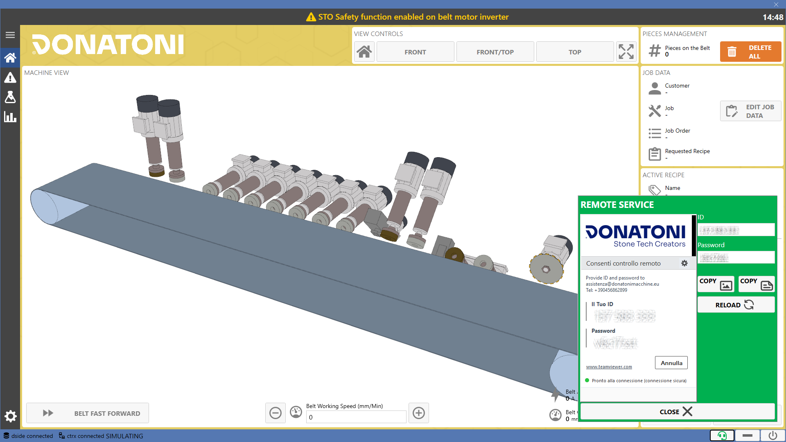
The Remote Assistance icon and panel background will be green if the system is online and ready for connection, red otherwise.
 | ID |
 | Password |
 | Copy as image |
Copy as text | |
 | Reload |
 | Close |
Copy as image | |
 | Copy as text |
 | Reload |
The 'Home' page is the software startup page, where it is possible to view some information and check the machine status during working.

Machine View
The main section of this page displays a three-dimensional model of the machine, including its groups and components, allowing the operator to interact with them.
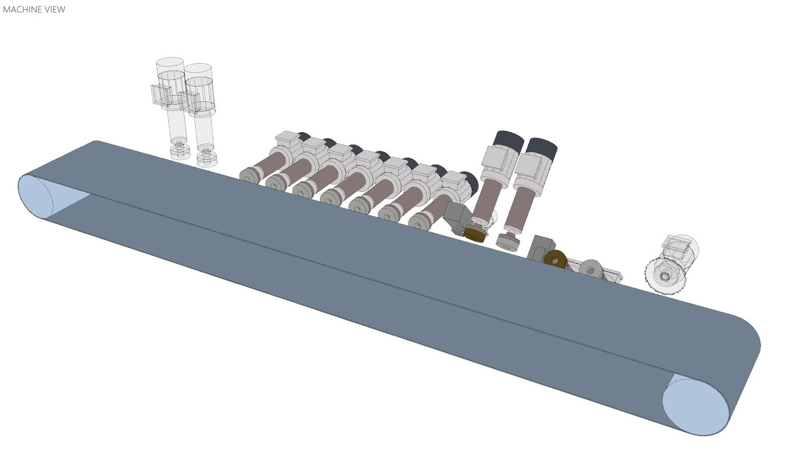
Based on the loaded recipe in the machine, elements and groups are depicted differently. Colored if the current recipe requires them, transparent otherwise.
Disabled Elements | Active Elements |
 |  |
By pressing on the depicted elements, pop-up windows open with some data related to the corresponding component and its respective working group.
Each of these windows allows the operator to view real-time data and configure the group and element parameters.

Machine visualization management
This section allows editing the machine view.
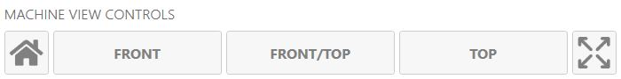
Default View | |
Front View | |
 | High front view |
 | Top View |
Restore view |
Pieces on the Belt Management
From this section the operator can track the working pieces, and possibly unload them in case of malfunction.
Pieces on the belt | |
 | Delete All |
Belt Data and Management
In the bottom section below the machine preview are some user data and controls for belt management.

Fast belt forward | |
 | Belt working speed |
 | Decrease/Increase Belt Working Speed |
 | Ampere consumption |
Current belt speed |
Management Information
Currently displayed are the management information with the 3 fields Customer, Job and Job Order.
Via the edit button it is possible to modify the informations, or it is possible to modify them remotely through the dedicated .csv shared file.
Once modified, the new informations will be associated with all pieces inserted from the moment of the modification.
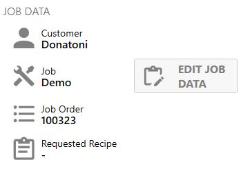
 | Customer |
Job | |
Job order | |
Requested Recipe | |
Edit Job Data |
Active Recipe Informations
The active recipe information on the machine is displayed in this section (name, size, special features, working list).
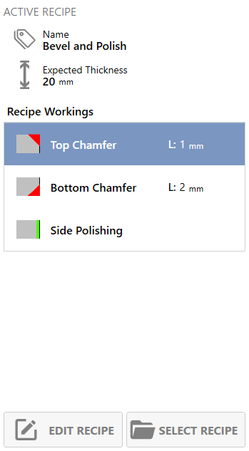
Name | |
Expected Thickness | |
 | Dimensions |
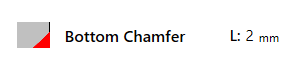 | Recipe workings |
 | Edit Recipe |
 | Select recipe |
 | Update recipe |
Selection of recipe to activate
This window, accessible via the dedicated button from the Home page, allows viewing recipes and selecting one for machine loading.
Clicking on the recipe in the list will display its preview.
The controls for the view are analogous to those of the main page.

Pressing the machine's three-dimensional model opens windows related to the pressed element and its belonging working group.
In these windows there are two sections with the real-time data visualization and the group and element configuration.
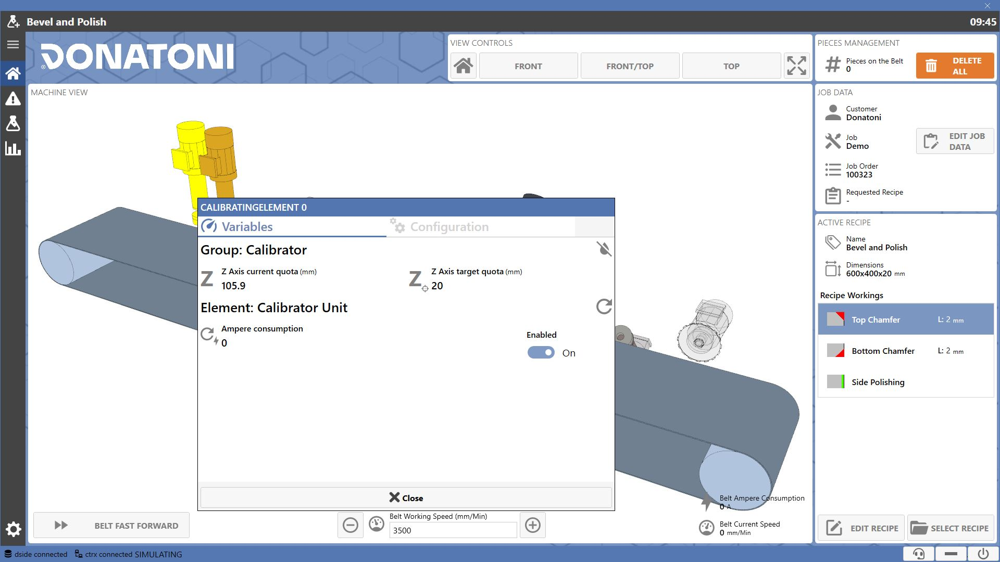
Sections
The informations provided by each window are divided into two sections.
 | Variables |
Configuration |
Variables
This section allows real-time monitoring of the selected element's variables and its belonging group.

Group
The upper section displays the specific axis quotes of the group. On one side the current quote where it is located, on the other the target quote for recipe working.
Additionally, it is always indicated whether the water for the group is running or not.
 | Water Operation |
Item
The lower part concerns instead the specific variables of the selected element. Those related to spindle start and ampere consumption are always available.
The operator can decide whether to force the disabling of the element regardless of the presence or absence of the related working in the recipe loaded on the machine.
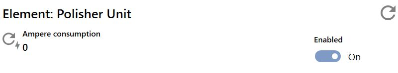
Working status | |
 | Ampere consumption |
 | Element Enabled |
Configuration
Section where the operator must enter the data related to the tool mounted on the element.

Group
Icons of the workings that the group can perform are shown in the upper part. In some cases, buttons are present that allow managing the group positioning.
In case a group may have multiple configurations, the operator can decide which to use.

Item
In the lower section the operator must enter the data related to the tool mounted on the element. It is necessary to correctly enter these data to achieve maximum precision in the workings.
Always necessary to insert the measurement of the tool diameter.

Calibrator Cleaner Group
Variables
In the section dedicated to the group the Z axis variables are shown. On one side the current quota, on the other the target quota for recipe working.
For both the calibrator and cleaner elements, no additional variables are shown beyond those common to all elements.
Configuration
In the section dedicated to group configuration, the icon for top polishing and calibrate working is displayed.
Below it the button to send the group to the safe position.

 | Safety Position |
Define the dimensions of diameter and thickness for the tool mounted on the calibrator unit group element.

For the calibrator group element, the diameter dimension of the mounted tool must be entered.
Side Edge Polisher Group
Variables
The upper section displays the spindle consumption enabling the oscillation of the group. Above it is possible to see whether oscillation is enabled or not.

 | Oscillation Status |
Below, for each calibrator item, only common variables across all items are shown.
Configuration
In the dedicated group configuration section, the icon of the side polishing working is displayed.
For each cleaner element in the group, the diameter size of the mounted tool must be inserted.
Top Chamfer Group
Variables
In the section dedicated to the group the Z axis variables are shown. On one side the current quota, on the other the target quota for recipe working.

For the calibrator element, the guide positioning dimensions are also displayed.

For the calibrator element, no additional variables are shown beyond those common to all elements.
Configuration
In the dedicated group configuration section, the icon for the top chamfer working is displayed.
Define the dimensions of diameter and thickness for the tool mounted on the calibrator unit group element.
For the calibrator group element, only the diameter size of the mounted tool must be entered.
Bottom chamfer group
Variables
In the section dedicated to the group no axis variables are displayed.
For the calibrator element, the guide positioning dimensions are also displayed.

For the calibrator element, no additional variables are shown beyond those common to all elements.
Configuration
In the section dedicated to group configuration, the icon for the bottom chamfer working is displayed.
Define the dimensions of diameter and thickness for the tool mounted on the calibrator unit group element.
For the calibrator group element, only the diameter size of the mounted tool must be entered.
Blade Cutting Group
Variables
In the section dedicated to the group, the dimensions of the Y-axis and the Z-axis are displayed. On one side, the current dimensions, on the other, the dimensions to be reached for recipe processing.

In the section dedicated to the element, only the variables common to all elements are displayed.

Configuration
In the section dedicated to group configuration, the icons of the available workings are displayed.

The buttons located below allow the operator to change the blade cutting group configuration based on the intended use.
Depending on the type and Blade Cutting group positioning, some modes may not be available; in such cases, they will not be displayed.
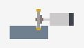 | Top Cut | 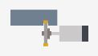 | Lower Cut |
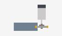 | Side Cut |  | Manual positioning cut |
 | Side Rectify |  | Top Calibration |
Depending on the type and Blade Cutting group positioning, some modes may not be available; in such cases, they will not be displayed.
Use the buttons below to change configuration or move the group to specific positions.
 | Initial position |
 | Park Disk |
When the group is configured for blade cutting, in the section dedicated to the element the user must enter the data related to the disk mounted on the element.
There is an explanatory figure showing how to measure the data.
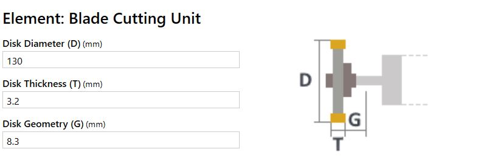
When instead the group is intended for calibrating workings, it is necessary to insert the diameter and thickness measurements of the mounted tool.
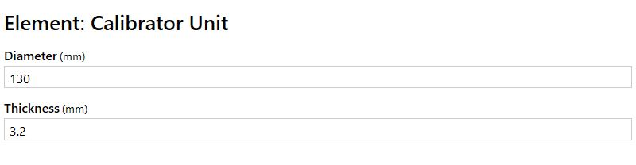
Bush-Hammer Polisher Group
In the window of the bush-hammer polisher group there is an additional section.

Belt management |
Variables
In the section dedicated to the group, the dimensions of the Y-axis is displayed. On one side, the current dimension, on the other, the dimension to be reached for recipe processing.
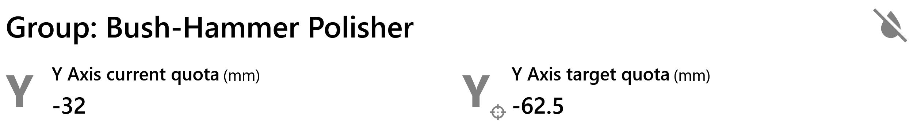
In the section dedicated to the element, only the variables common to all elements are displayed.
Configuration
In the section dedicated to group configuration, the icons of the available workings are displayed.

The buttons located below allow the operator to change the bush-hammer polisher group configuration based on the intended use.
Bush-hammer | |
 | Polisher |
Use the buttons below to change configuration or move the group to specific positions.
Park | |
Initial position |
For the bush-hammering element it is necessary to define the dimension of the diameter of the mounted tool.
It is necessary to define the diameter for both the configurations allowed by the group, since the mounted tool is different.
For each polishing element in the group, the diameter size of the mounted tool must be inserted.
Belt management
This section allows to manage the speed of the belt when a bush-hammering working is executed.
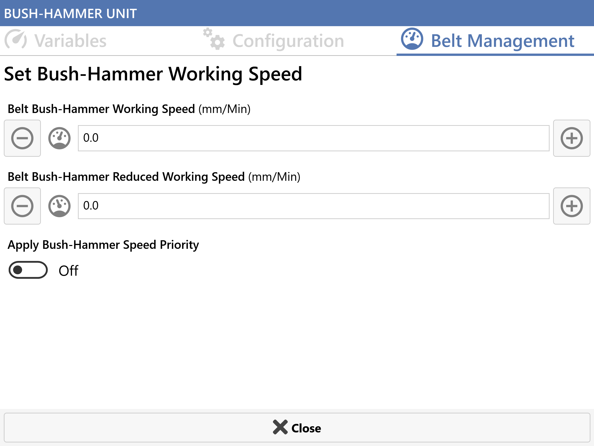
 | Belt bush-hammer working speed |
Belt bush-hammer reduced working speed | |
Appply bush-hammer speed priority |
Active error messages in the machine and their history are accessible on this page.

Alarm Categories
Two alarm categories are distinguished on this page.
 | Active |
 | History |
Using the button at the top right, it is possible to customize the machine alarms.
 | Load message files |
Active
List of messages related to currently active errors and warnings in the machine, along with their respective codes.

History
This list shows the history of all errors detected by the machine.
For each element it is possible to view its identifying code, the enabled status, a description, date and time when it was detected.

The dropdown menu located at the top right allows selecting the time interval for displaying messages.

View, create and edit recipes for piece working through this page.
The actions on recipes are managed in the panel on the left side, which contains the recipe list, while the main view window is used to display:
The machine with highlighted active working groups.
The selected piece with the applied workings highlighted.

Preview
This section is used to display the selected recipe. The operator can choose whether to show the machine elements that will be used for those workings or a preview of the resulting piece.

The bar located at the top allows interaction with the angle of the preview camera. The blue buttons instead, allow the operator to select the model to display in the preview.
 | Piece view |
 | Machine View |
Selecting 'Piece' displays the selected piece in the recipe list with its workings.

Recipe Panel
This panel allows selecting recipes for viewing and managing their creation, deletion, copy and editing.

Each entry in the list displays the recipe name, the dimensions of the piece to be worked, and the workings defining it.

Manage the list recipes with the buttons at the bottom.
 | New Recipe |
Delete Recipe | |
 | Edit recipe |
 | Copy Recipe |
New Recipe
Pressing the 'New Recipe' button opens the panel for creating a new recipe.

Recipe Data
Through this section it is possible to insert the main information for the new recipe, and add workings.

 | Name |
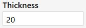 | Thickness |
The operator can use the button located at the top right to enable the advanced recipe.
 | Advanced settings |
Advanced recipe settings allow inserting, in addition to thickness, recipe length and width, and in case of non-through workings, to specify different references for the start and end of the working.

 | Length |
 | Width |
The button to add workings to the recipe is located at the bottom.
 | Add working |
Add Working
The button 'Add Working' opens a new tab where the desired working can be selected.

Press the button located on the right to add a working.
Apply working |
Working group selection
The selected working may be executed by multiple groups, the operator can choose which of the available ones to use.
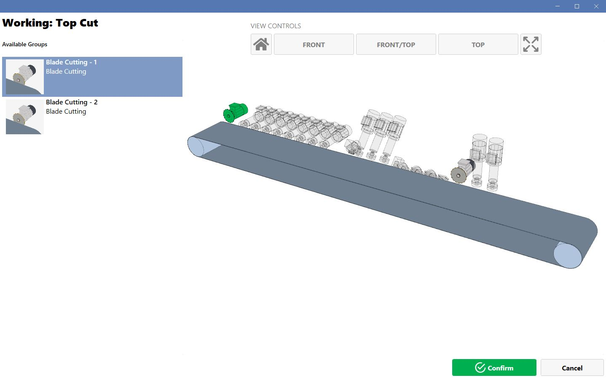
Once selected, that group will no longer be available for that working.
It is possible to add the same working to the recipe multiple times as long as there are available groups.
Working parameters
Selecting and opening a new working displays the working sheet of the selected type, with the relevant user-editable data.
For each working it is possible to insert the parameters that define its geometry.
In the preview the quantities affected by the working parameters are highlighted.

Group Parameters
The machine view mode allows seeing the piece and the machine, specifically which groups are active and which are inactive to perform the workings applied to the recipe.
The group associated with the selected working is colored green.

From the panel below there is a quick access to the parameters of the group performing the working, from which it is possible to activate and deactivate the individual elements.

 | Toggle element Enable/Disable element |
Advanced Parameters Panel |
Disabled elements will be displayed in dark gray in the machine view mode.

Edit recipe
From the initial page and from the recipes page, pressing the edit button of the selected recipe opens the modification panel.
It is possible to edit main informations, and add workings.

The workings on the recipe are displayed in the visualization window.

The workings composing the recipe are visible within the list below.
Each entry displays a preview of the working, the name identifying it, and some characterizing measurements.

Selecting the working, it is possible to edit its parameters.
Use the button located to the right of the respective row to delete a working from the recipe.
Remove Working |
At the end of the modification, it is possible to decide whether to apply the changes to the original recipe or create a new one with all assigned workings.
 | Save With Name |
Each working allows the operator to modify the parameters defining its geometry. The affected dimensions are shown in the preview on the right.

Available Workings
The program provides the following workings.
 | Top Calibration | 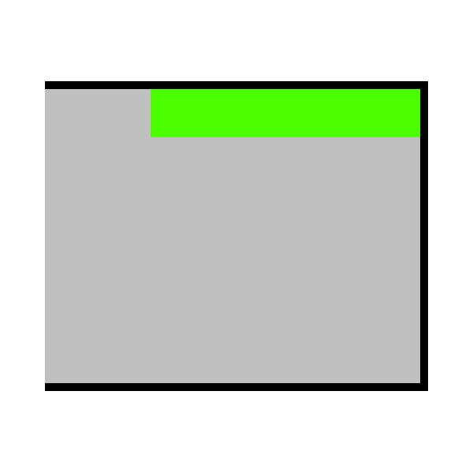 | Calibrate Top Polishing |
 | Side Rectify |  | Side Polishing |
 | Top Bevelling | 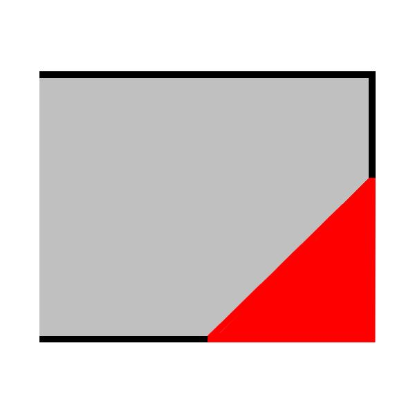 | Bottom Chamfer |
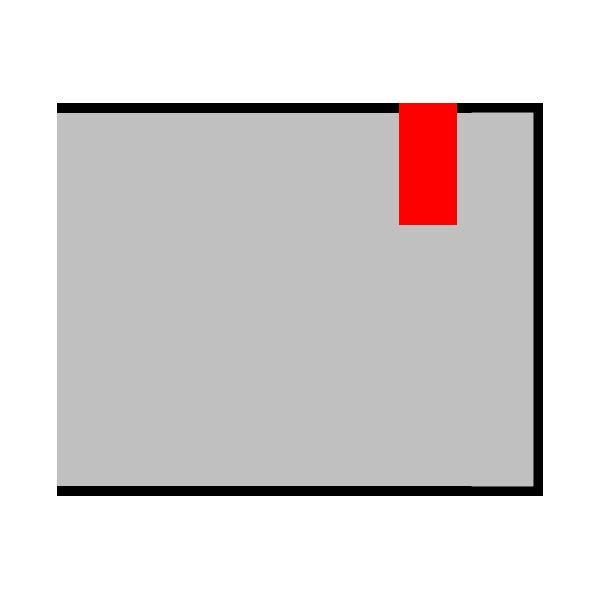 | Top Cut | 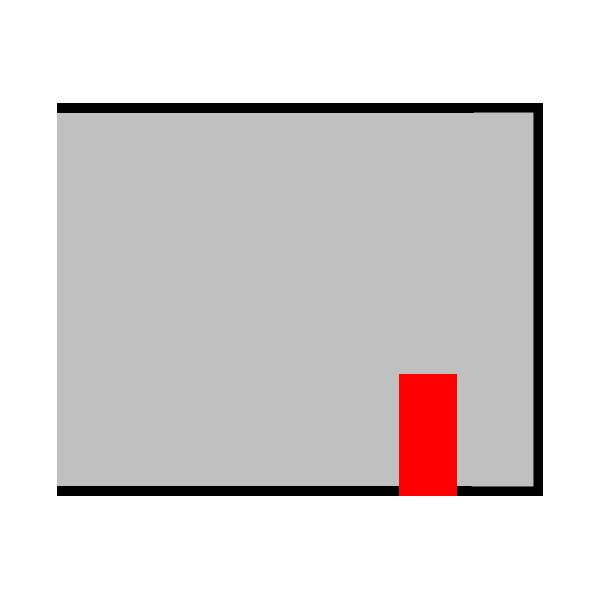 | Lower Cut |
 | Side Cut |  | Manual positioning cut |
 | Bush-hammering |  | Polish top |
The actually available workings depend on the machine configuration, i.e., which groups are mounted on it.
Recipe Workings
The workings that make up the recipe are listed within the list in the left section.
Each entry displays a preview of the working, the name identifying it, and some characterizing measurements.
Selecting the recipe displays all defining parameters and a preview. The operator can edit the parameters.
Use the button located to the right of the respective row to remove a working from the current recipe.
 | Remove Working |
Working parameters
Working parameters may be inserted in the dedicated section.

The specific parameters for the selected working are shown in the top part.
For workings that allow it, the operator can decide whether they must be executed for the entire length of the piece or not.
 | Pass-through working |
Additional parameters are displayed in case of non-through working.

 | Start Distance |
 | End Distance |
In case the advanced recipe has been set, the operator is given more control over non-through working parameters.
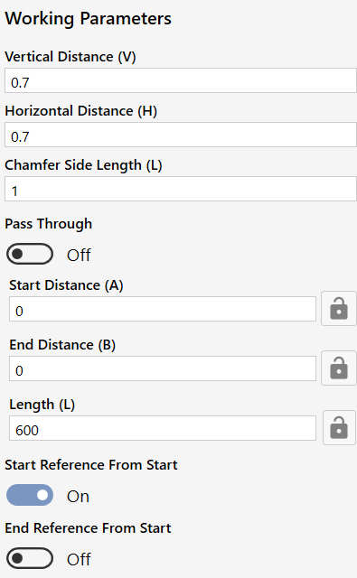
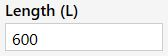 | Length |
 | Lock measurement |
 | Start Reference From Start |
 | End Reference From Start |
Preview
In the right section, a preview of the working is shown on the piece model, highlighting the dimensions the operator must enter within the parameters.

Moving the view on the machine model highlights in green the group assigned to the working.

This working allows removing material from the top part of the working piece to reach the desired thickness.

Parameters

 | Thickness |
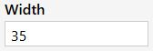 | Width |
Available Groups
Side Cutting/Grinding Group | Blade Cutting Group |
 |  |
This working allows removing material from the top part of the working piece and polishing the same area.
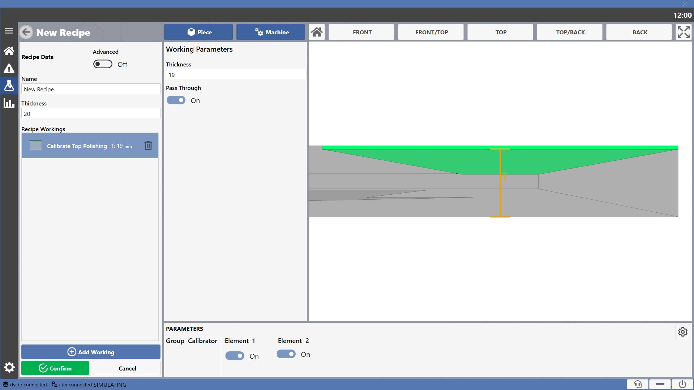
Parameters
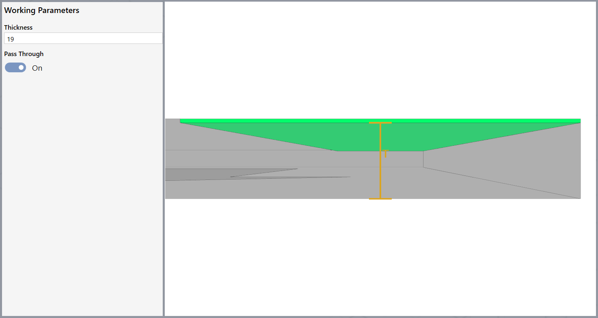
 | Thickness |
It is not possible to modify the width of this working.
The working width on the piece depends on the diameter of the calibrator tool mounted on the calibrator unit.
Available Groups
This working can be performed exclusively by the calibrator top cleaner group.
Top Calibrator Group |
 |
This working allows material removal from the piece edge.

Parameters
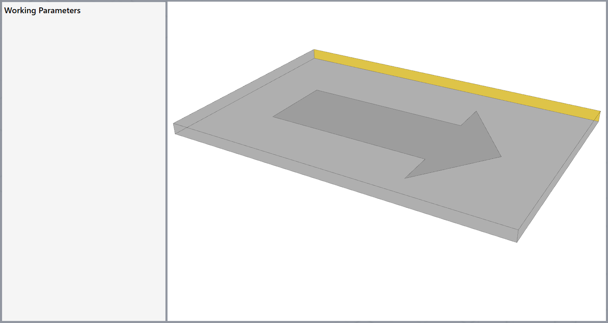
Available Groups
This working can be performed by the cutting/grinding group.
Blade Cutting/Grinding Group |
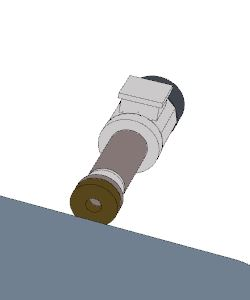 |
This working allows polishing the edge of the piece.

Parameters
The working does not require parameters.

This working can be performed both in pass-through and blind mode.
In case of non-through working, the distance between the start point and the end point of the working cannot be less than the diameter of the abrasives mounted on the cleaning elements.
Available Groups
Side Polishing Group |
 |
This working allows performing a top edge chamfer of the piece side.

Parameters

 | Vertical Distance |
 | Horizontal Distance |
 | Chamfer length |
Available Groups
Top Chamfer Group |
 |
This working allows performing a bottom chamfer of the edge of the piece.
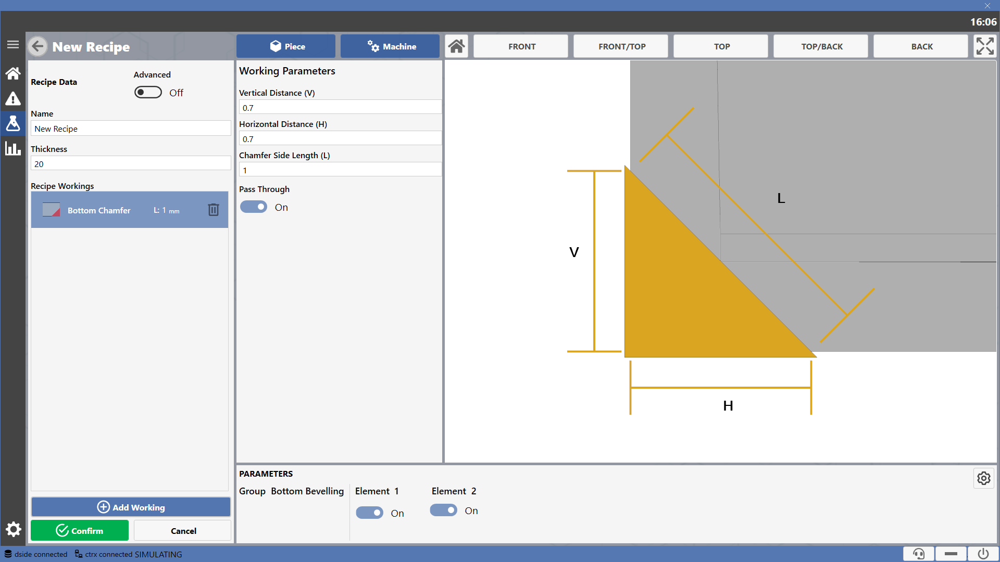
Parameters

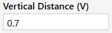 | Vertical Distance |
 | Horizontal Distance |
 | Chamfer length |
Available Groups
Bottom chamfer group |
 |
This working allows performing a cut on the top surface of the piece.

Parameters

 | Depth |
 | Offset From Edge |
Available Groups
Blade Cutting/Grinding Group |
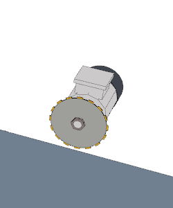 |
This working allows performing a cut on the lower surface of the piece.

Parameters

 | Depth |
 | Edge Offset |
Available Groups
Blade Cutting/Grinding Group |
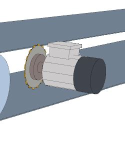 |
This working allows performing a cut on the edge of the piece.

Parameters

 | Depth |
 | Offset From Edge |
Available Groups
Cutting group/blade calibrator and side cutting blade |
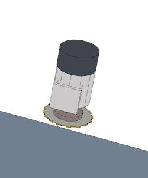 |
This working allows manually assigning a position and an inclination to the disk to perform a through cut on the piece.
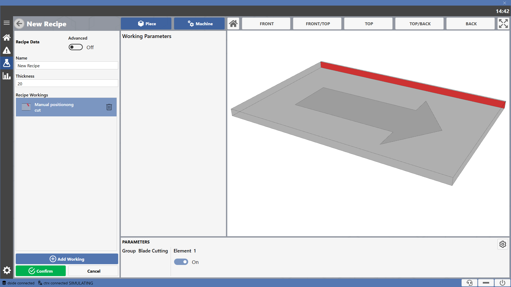
Parameters

Available Groups
Blade Cutting Group |
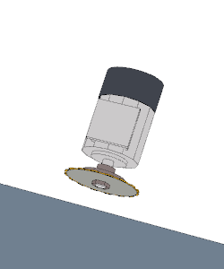 |
This operation allows roughening a part of the upper surface of the piece.
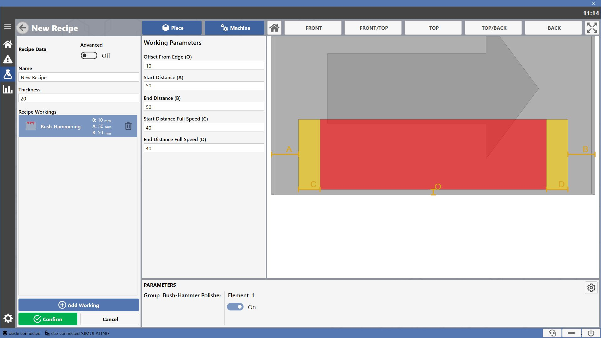
Parameters

 | Distance from edge |
 | Start distance maximum speed |
 | Start distance maximum speed |
Available groups
Group bush-hammer/polisher |
 |
This operation allows cleaning a zone of the upper surface of the piece.
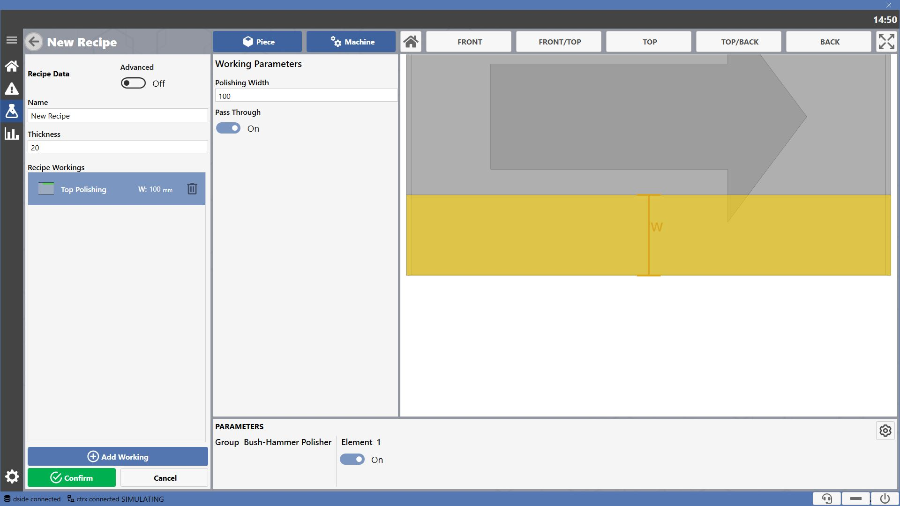
Parameters
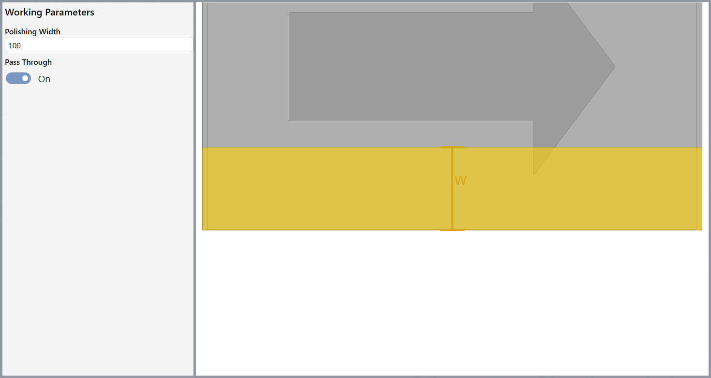
 | Polishing width |
Available groups
Group bush-hammer/polisher |
 |
The advanced parameters panel allows viewing leads/lags of the various operations performed by the group assigned to the selected working and its elements.
The highlighted group is shown in green within the preview with the machine model view.

Sections
The informations provided by each window are divided into two sections.

 | Base |
Correction |
All parameter modifications in this panel are disabled for the standard operator; they can only be performed by an authenticated expert using a specific password.
Base
In this section you can view the parameters defining the default behaviors for the group and related elements when performing passing workings.
Non-passing working behaviors are automatically calculated by the machine based on the geometry of the workings to be performed.
The parameters always refer to the distance between the center of the element, or group, which must perform the indicated action, and the reference point, whether head or tail, of the piece they must work.
To represent delays, negative values are used. For delays instead, positive values are used.
The zero represents the moment when the reference point of the piece, whether head or tail, is exactly under the center of the element or group in question.

Group
The parameters managing the operation of some specific behaviors of the selected group are shown in the top section.
The timing of water start and end for the group is always indicated.
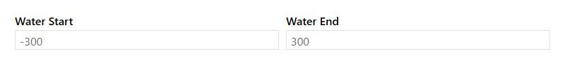
 | Water Start |
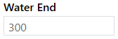 | Water End |
Item
Below is the list of parameters controlling each element composing the group. The delays and advances of the element positioning are always indicated.
Additionally, the operator may decide whether to use or not the element for the selected working.
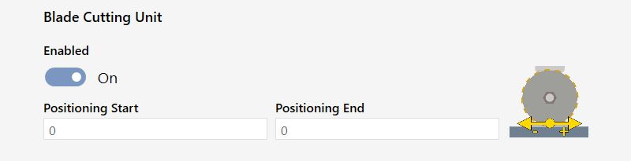
 | Element Enabled |
 | Positioning Start |
 | Positioning End |
Corrections
These parameters allow applying fixed positive or negative offsets to displayed actions. They are used to correct any detected delays or advances in the execution of these actions.
For example, if element 1 of group 5 always performs the positioning start with a 10mm delay, it is possible to set the related parameter to -10 to correct the issue.
Corrections apply to both passing and non-passing workings.
The parameters always refer to the space difference between the moment an operation is performed with the element’s or group’s default settings and the moment it is desired to be carried out.
To represent delays, negative values are used. For delays instead, positive values are used.
The zero represents the exact moment when the action is performed using the basic parameters.

Group
The top section is dedicated to corrections of the group operations.
Correction of the advance/delay of water start/end is always indicated.

 | Correction Water Start |
 | Correction Water End |
Item
The list below shows the parameters that allow corrections to be applied to operations performed by each element of the group.
It is always possible to set delays or advances for element positioning or spindle start.
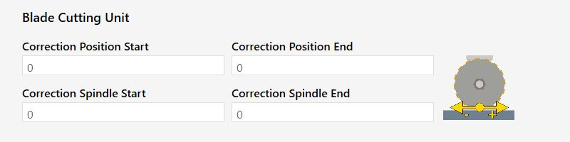
 | Correction Position Start |
 | Correction Position End |
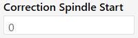 | Correction Spindle Start |
 | Correction Spindle End |
Calibrator Cleaner Group
Base
The basic parameters governing the group actions are only the general ones.
Both the calibrator element section and the cleaner element section do not add anything to the already described basic settings.
Corrections
The calibrator element is bound to the Z-axis of the group. If corrections are to be made, it is necessary to act on the group parameters.
In the section dedicated to the group, it is possible to act on the Position delays and advances related to the axis positioning.

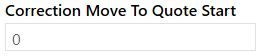 | Correction Move To Quote Start |
 | Correction Move To Quote End |
As a result, in the calibrator element section, it is not possible to apply corrections to the element positioning.

For the cleaner element no other parameters are shown besides those common to all elements.
Side Edge Polisher Group
Base
Among this group’s parameters, the timing of spindle start and end controlling its oscillation is indicated.

 | Oscillation Enabled |
 | Oscillation Start |
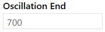 | Oscillation End |
The cleaner elements section adds nothing to the already described basic settings.
Corrections
In the section dedicated to the group, it is possible to act on the delays and advances related to the oscillation operation.

Correction Oscillation Start | |
 | Oscillation End Correction |
In the section dedicated to cleaning elements, no other parameters are shown besides the common ones already described.
Top Chamfer Group
Base
The basic parameters governing the group actions are only the general ones.
In the section dedicated to the calibrator, the parameters regulating the braking and guide delays and advances are displayed.

 | Return Braking Start |
 | Return Braking End |
 | Guide positioning start |
 | Guide Positioning End |
Section relating to the cleaning element adds nothing to the already described basic settings.
Corrections
In the section dedicated to the group it is possible to act on the delays and advances related to axis positioning.

Both the section related to the calibrator element and that of the calibrator element do not add anything to the existing correction settings.
Bottom chamfer group
Base
The basic parameters governing the group actions are only the general ones.
In the section dedicated to the calibrator, the parameters regulating the braking and guide delays and advances are displayed.

In the section dedicated to cleaning elements, no other parameters are shown besides the common ones already described.
Corrections
In the group-dedicated section, no other parameters are shown besides the common ones.
Both the section related to the calibrator element and that of the calibrator element do not add anything to the existing correction settings.
Blade Cutting Group
Base
The basic parameters governing the group actions are only the general ones.
The section related to the element adds nothing to the already described basic settings.
Corrections
In the group-dedicated section, no other parameters are shown besides the common ones.
The section dedicated to the element adds nothing to the already described correction settings.
Bush-hammer polisher group
Base
The basic parameters governing the group actions are only the general ones.
The section related to the element bush-hammering element allows only to handle its activation.

The polishing elements section adds nothing to the already described basic settings.
Corrections
In the group-dedicated section, no other parameters are shown besides the common ones.
Both the section related to the bush-hammering element and the ones of the polishing elements do not add anything to the existing correction settings.
The 'Statistics' page is the page where it is possible to view the statistics related to the machine and the work performed by the machine.

Categories
The main page provides two buttons allowing access to the specific sub-pages for the desired type of statistics.
Machine Statistics | |
 | Processed pieces |
Available at the top left of each screen are the following buttons for navigation.
Back | |
 | Reload |
Machine Statistics
Monitored on this page are the statistics related to machine usage.

Tracking of the following Statistics is kept on this page:
Total Pieces | Number of executed pieces. |
Total pieces length | Total length of executed pieces. |
Belt advance | Distance traveled by the belt. |
Belt operation | Distance traveled by the belt during working. |
Belt Operating Time | Belt Operating Time. |
Machine Running Time | Machine Running Time. |
Machine Working Time | Machine Working Time. |
The Machine Statistics page allows viewing statistics through the three panels:
Daily Totals
Work Totals
Machine Totals
Each panel displays statistics concerning the same measured quantities, but with different conditions depending on the observed section.
Daily Totals
In this section there is a chart showing the desired statistics in the selected time frame.

Top bar contains a filter for the statistics to be displayed in the chart.

The first component of the bar allows selecting the desired Statistics.
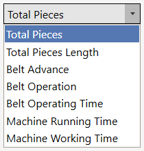
The buttons allow selecting a time interval, highlighting the selected one in green.
 | Daily Statistics |
 | Monthly Statistics |
 | Annual Statistics |
Total Statistics | |
Custom Statistics |
The custom range can be modified using the dedicated components located to the right of the button. Press the calendar-shaped icon to the right of the date and select the desired date for the range.

Work Totals
In the Work Totals it is possible to view through the circular chart the advancement percentage of the work, calculated as the ratio between the progress made and the final target.

Statistics related to the target quota are displayed at the top left.
Target | Fixed length value for pieces to be worked. |
Edit target quota | |
Progressive | Length of pieces worked since last reset. |
Advancement percentage | Advancement percentage of the work, calculated as the ratio between the progress made and the final objective. |
Press the button located at the top right to reset the counters.
 | Reset counters |
Machine Totals
General statistics for the entire machine activity period are displayed in this section.

Processed pieces
Through this page the operator can filter and view specific information of the executed pieces.

In the list forming the main part of this screen, all working pieces are cataloged. Each row corresponds to a piece.
Pressing the square located on the left allows row selection.
Export the selected statistics using the button located at the top right.
 | Export |
Filtering Statistics
The filtering bar allows selecting different conditions to filter the Statistics.

Pressing the first bar component allows selecting the property to filter.
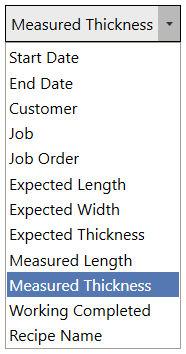
Pressing the second component allows selecting the operation to be performed to determine which elements will result after filtering.
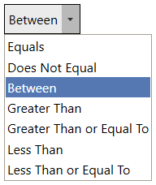
The value to be used for the filtering operation must be entered in the adjacent bar to the two components just described.
The selected filter is added to the bar to the right of the button, it is possible to remove it by pressing the X on the left.
Listed below are the buttons useful for performing the operations described above.
Add filter | |
 | Remove filters |
If the number of selected items exceeds those visible, it is possible to navigate pages using the numbered buttons at the bottom. The selected page number is highlighted in green.
It is possible to select the number of rows per page that can be displayed.
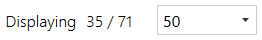
The following screen is the settings page, which allows the user to configure various system parameters.
Sections
To ease navigation, settings are divided into sections viewable by clicking the icons at the top.

 | Application |
 | User |
 | Database |
Connection | |
 | Graphics |
Statistics | |
 | Machine |
All |
Search bar
Below the list of parameters there is a search bar to filter the desired entries.

 | Delete filter |
Other buttons
Bottom right are located some buttons that allow to request remote assistance or Machine Shutdown.

Admin login | |
 | Remote Assistance |
Turn Off |
Program version
The software D-Edge version currently installed is visible in the bottom-right corner of this page.
Software version |